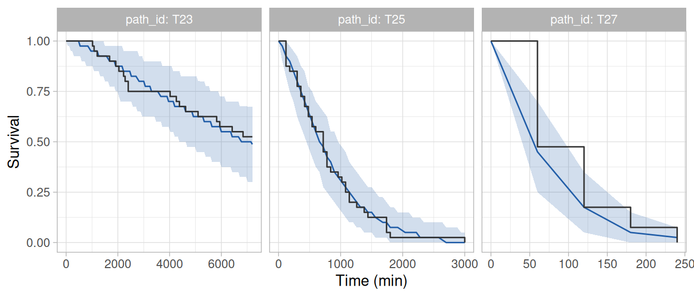
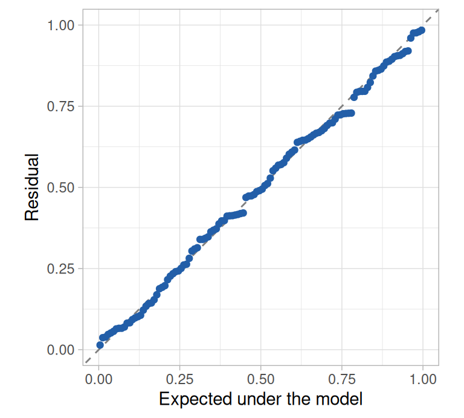
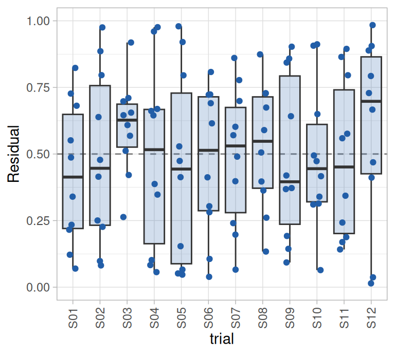
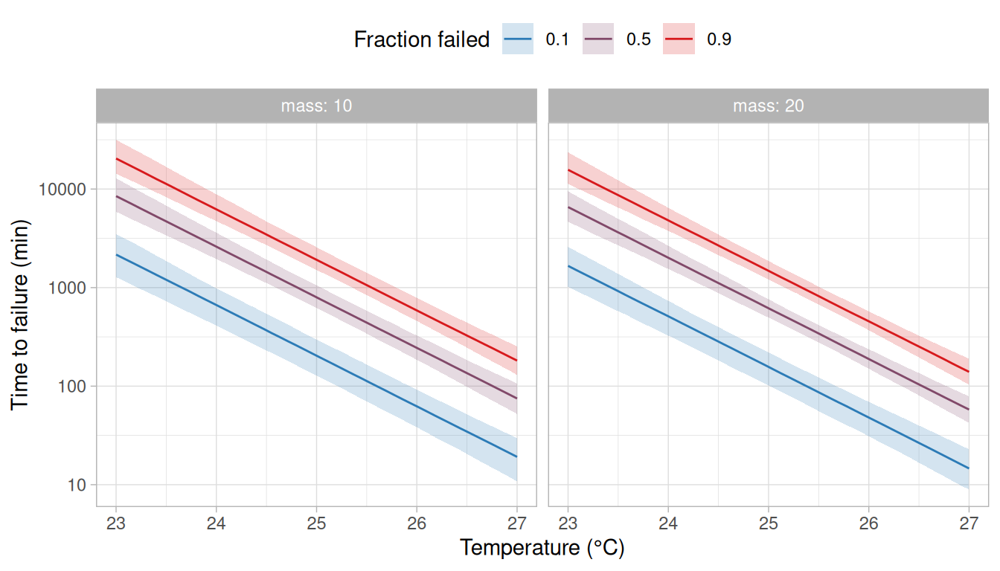
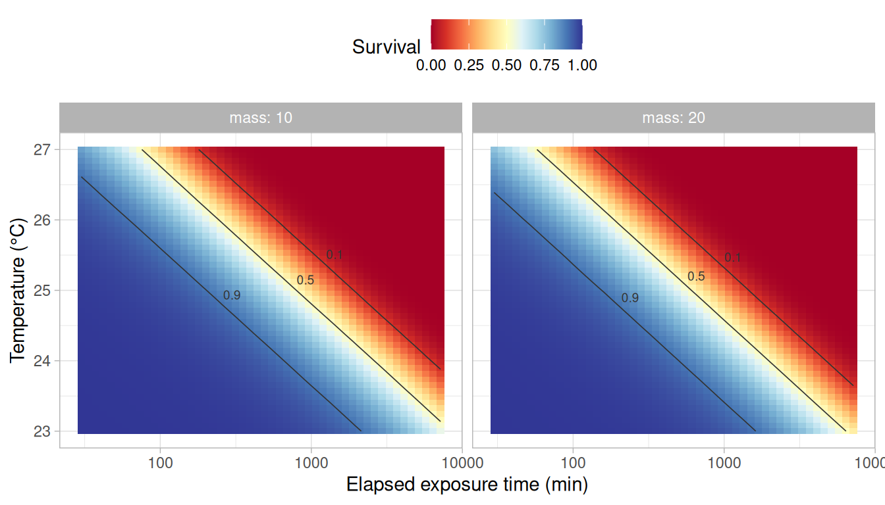
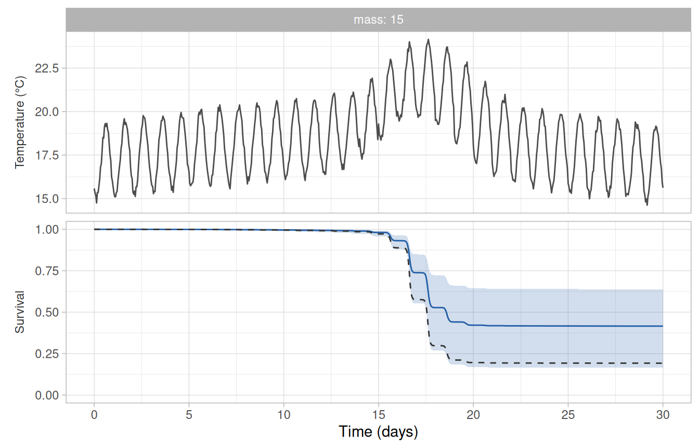
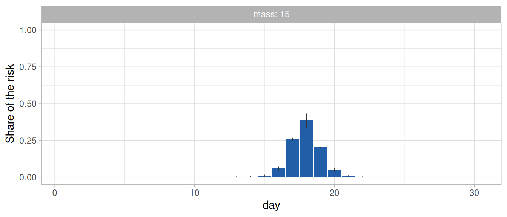

Thermal tolerance is usually reported as a summary of an assay, such as the critical thermal maximum (CTmax) of a ramping trial or the time to failure at a constant temperature. These summaries depend on how the assay was run (e.g., the ramp rate or the temperatures chosen), which makes them difficult to compare among studies and to extrapolate to conditions outside the assay. rTFT takes a different route, following the failure-rate framework of Kingsolver and Umbanhowar (2018). It fits a model of the failure rate (i.e., how quickly individuals fail at each temperature) to the times of failure recorded in an assay, using Bayesian inference, and derives the usual summaries from the fitted model, each with its posterior uncertainty.
In this vignette, we fit a model to a static assay and derive from it: (i) the static critical thermal maximum (i.e., the constant temperature at which a given fraction of individuals fail within a reference time, such as 1 h), (ii) the thermal death time curves and (iii) the thermal tolerance landscape. We then use the fitted model to predict survival along a record of stream temperature. The same steps apply to a ramping assay, which is the subject of the vignette Ramping assays.
The static assay
The mock dataset static_assay holds the times to loss of equilibrium of 120 juvenile salmonids held at 23, 25 or 27°C. Each temperature was run in four trials of 10 fish. The fish were checked every hour for five days, so the time of each failure is known only to lie between two consecutive checks (i.e., it is interval-censored). Fish that had not failed by the end of the fifth day were recorded as survivors.
Note
The data were simulated. The values are plausible for a juvenile salmonid acclimated to 14°C, but they stand for no particular study. Because the model that generated them is known (see
?ramp_assay), we can compare what we estimate against the values used in the simulation.
head(static_assay)
#> # A tibble: 6 × 7
#> id trial path_id temp mass event t_upper
#> <int> <chr> <chr> <dbl> <dbl> <int> <dbl>
#> 1 1 S01 T23 23 19.9 0 7200
#> 2 2 S01 T23 23 14.3 0 7200
#> 3 3 S01 T23 23 8 0 7200
#> 4 4 S01 T23 23 16.6 1 2040
#> 5 5 S01 T23 23 29.5 1 2400
#> 6 6 S01 T23 23 9 1 5820Each row is a fish. The column event is 1 for a fish that failed and 0 for a survivor, and t_upper is the time (min) of the check at which the fish was found to have failed, or of the last check for a survivor. The column path_id links each fish to the temperature it was exposed to.
All fish failed at the two warmer temperatures, whereas about half of them survived the five days at 23°C. The median time of the check at which fish were found to have failed (or were last observed) decreased from five days at 23°C to 1 h at 27°C.
The table of intervals at risk
The model is fitted to a table with one row for every interval during which a fish was at risk of failing (i.e., every interval between two checks, up to the one in which the fish failed). The function build_hazard_data() builds this table from three inputs: the fish, the temperature each group of fish was exposed to through time, and the times of the checks.
The temperature trajectories are given as a table of times and temperatures for each path_id, which build_hazard_data() interpolates linearly. A constant temperature therefore needs only two points.
path <- data.frame(
path_id = rep(c("T23", "T25", "T27"), each = 2),
time = rep(c(0, 7200), times = 3),
temp = rep(c(23, 25, 27), each = 2)
)
checks <- expand.grid(
path_id = c("T23", "T25", "T27"),
time = seq(0, 7200, by = 60)
)
long <- build_hazard_data(
static_assay, path,
observation = "interval",
covariates = c("mass", "trial"),
checks = checks
)
head(long)
#> # A tibble: 6 × 12
#> id mass trial path_id tau exposure Ta failed Tr log_tau tau_ref
#> <int> <dbl> <chr> <chr> <dbl> <dbl> <dbl> <int> <dbl> <dbl> <dbl>
#> 1 1 19.9 S01 T23 30 60 23 0 25 3.40 360
#> 2 1 19.9 S01 T23 90 60 23 0 25 4.50 360
#> 3 1 19.9 S01 T23 150 60 23 0 25 5.01 360
#> 4 1 19.9 S01 T23 210 60 23 0 25 5.35 360
#> 5 1 19.9 S01 T23 270 60 23 0 25 5.60 360
#> 6 1 19.9 S01 T23 330 60 23 0 25 5.80 360
#> # ℹ 1 more variable: log_exposure <dbl>Each fish now contributes one row per interval, with the response failed equal to 1 only in the interval in which it failed. The columns Ta and tau hold the temperature and the elapsed exposure time at the midpoint of the interval, and exposure its length. Two further columns hold constants that anchor the model: the reference temperature Tr, which defaults to the median temperature at which failures were observed (25°C here), and the reference time tau_ref, which defaults to the median time at which failures were observed (360 min).
The model
The model describes the hazard of failure, which is the rate at which individuals that are still unaffected fail. In the framework of Kingsolver and Umbanhowar (2018), the hazard at any moment is a failure rate that depends on the current temperature, . rTFT extends it with a baseline that allows the hazard to depend also on the time already spent under exposure, so the hazard is the product of two terms,
where is the failure rate at temperature and is a baseline that allows the hazard to change with the elapsed exposure time . The probability of surviving an exposure follows from the hazard accumulated over it. At a constant temperature,
where is the cumulative baseline hazard. rTFT offers several functions for each term (see ?M_catalogue and ?h0_catalogue). Here we use an exponential failure rate, , in which is the thermal sensitivity (i.e., the proportional increase in the failure rate per degree), and a Weibull baseline, in which a shape parameter allows the hazard to rise () or fall () with exposure time. With the baseline is constant and the hazard depends on temperature alone, which is the memoryless case of Kingsolver and Umbanhowar (2018) and the baseline called "mem" in the package. The vignette Comparing and averaging models shows how to compare alternative functions.
Each parameter of the model may depend on covariates and may vary among groups. Here, we allow to change with body mass, which we centre at 15 g so that refers to a fish of that mass, and to vary among trials, because fish in the same trial share a tank and a day and their failure times are unlikely to be independent.
Fitting
The function fit_hazard() fits the model using Bayesian inference in Stan (Carpenter et al. 2017), through the brms package (Bürkner 2017). It builds weakly-informative default priors, which can be inspected before fitting (see ?build_hazard_prior). These priors take three values from the data (the reference time, the reference temperature and the median temperature at which failures were observed), which place them at the conditions of the assay. They are placed in this way because a prior that is centred far from those conditions can bias the estimates (e.g., when the amplitude refers to a temperature well below those at which individuals failed). The data therefore set where the priors of the amplitude are centred, and not those of the thermal sensitivity or of the shape of the baseline, and the priors are wide (e.g., a standard deviation of 2 on the logarithm of the amplitude). Priors based on what is already known about a species can be given in their place.
formulas <- list(loga = ~ 1 + I(mass - 15) + (1 | trial))
build_hazard_prior("exp", baseline = "weibull", dpar_formulas = formulas, long = long)
#> prior class coef group resp dpar nlpar lb ub tag source
#> normal(-1, 2) b Intercept loga <NA> <NA> user
#> normal(0, 1) b loga <NA> <NA> user
#> exponential(2) sd loga <NA> <NA> user
#> normal(-0.7, 1) b Intercept logb <NA> <NA> user
#> normal(0, 1) b Intercept logshape <NA> <NA> userFitting takes a few minutes, so the code below was run once and its results were saved with the package (see the note at the end of this vignette).
fit <- fit_hazard(
long,
m_form = "exp",
baseline = "weibull",
dpar_formulas = formulas,
chains = 4, iter = 2000, warmup = 1000, cores = 4, seed = 20261006,
control = list(adapt_delta = 0.95), backend = "cmdstanr"
)Any argument that fit_hazard() does not use itself is passed to brms::brm(). For example, we raised adapt_delta from its default of 0.8, which makes the sampler take smaller steps, because a trial run at the default gave a divergent transition. A single divergent transition is not a concern in itself, but divergent transitions are common in models with a group-level standard deviation that is poorly informed by the data (12 trials here), and a smaller step size usually removes them at little cost. We kept this setting for every model fitted in these vignettes. The models were fitted with the cmdstanr backend, which is given in the code because the default backend produces different draws for the same seed, so the results below are reproduced exactly only with it.
Convergence
The estimates should not be interpreted before checking that the sampler converged. We use the rank-normalised split- and the bulk and tail effective sample sizes (ESS) of the posterior package (Vehtari et al. 2021; Bürkner et al. 2025), together with the number of divergent transitions.
posterior::summarise_draws(posterior::as_draws_array(fit),
"median", "sd", "rhat", "ess_bulk", "ess_tail")| variable | median | sd | rhat | ess_bulk | ess_tail |
|---|---|---|---|---|---|
| b_loga_Intercept | -1.278 | 0.193 | 1.002 | 1741 | 2125 |
| b_loga_ImassM15 | 0.036 | 0.015 | 1.002 | 3295 | 2168 |
| b_logb_Intercept | 0.486 | 0.099 | 1.002 | 1820 | 2164 |
| b_logshape_Intercept | 0.321 | 0.097 | 1.001 | 1781 | 2318 |
| sd_trial__loga_Intercept | 0.227 | 0.157 | 1.003 | 1458 | 1587 |
All values of were below 1.01, all effective sample sizes were above 400 and there were 0 divergent transitions in 4,000 draws. The table shows the parameters on the scale at which they were sampled (i.e., the logarithms of , and ). They are easier to read on their natural scale, which derive_tdt_ttl() reports below.
Fit of the model to the data
A model that converged may still describe the data poorly, so we check it against the data before deriving anything from it. rTFT provides two checks.
The first, check_survival(), is a posterior predictive check. For each temperature trajectory it compares the proportion of fish observed to survive through time (the Kaplan-Meier estimate) with the same proportion in datasets simulated from the fitted model. Both checks draw random numbers, so we set a seed to make them reproducible.
set.seed(20261006)
chk <- check_survival(fit)
plot_check(chk, time_unit = "min")
At each check, the observed proportion was within the simulated band at the three temperatures (Figure 1). Both the observed and the simulated lines change in steps, because the proportion surviving in a group of 40 fish can only change by multiples of 1/40 and survival was only recorded at the checks. The steps are largest at 27°C, where about half of the fish had failed by the first check. The bands are wide because they include the variation expected among groups of this size. With by = "trial", the same check is made for each trial separately.
The second check, hazard_residuals(), gives one residual for each fish: the fraction of fish that the model predicts to have failed by the time that fish did. A residual near 0 is a fish that failed earlier than the model predicts, and a residual near 1 is a fish that lasted longer. When the model describes the data, the residuals are uniformly distributed between 0 and 1 (as are the residuals of the DHARMa package (Hartig 2024), on which they are modelled).
set.seed(20261006)
res <- hazard_residuals(fit)
plot_residuals(res)
plot_residuals(res, against = "trial") +
theme(axis.text.x = element_text(angle = 90, vjust = 0.5))

The residuals followed the uniform distribution closely and showed no trial whose fish consistently failed earlier or later than predicted (Figure 2). Residuals should be examined against variables that were set before the outcome was known (e.g., a covariate, a treatment or a trial), and not against the time of failure, with which they increase under any model (see ?hazard_residuals).
Thermal tolerance derived from the fit
The function derive_tdt_ttl() computes every derived quantity for each posterior draw and summarises the draws by their median and equal-tailed credible interval (95% by default, i.e., the interval between the 2.5% and 97.5% quantiles of the draws). By default it uses 1,000 draws spaced evenly through the posterior (the argument n_draws), which keeps the derivation, and the predictions along a record below, fast; the limits of a 95% interval then rest on about 25 draws in each tail. It requires the covariate values at which to report (newdata) and the exposure time to which the critical thermal maximum refers (t_ref), in the time unit of the data. Group-level effects are set to zero, so the results describe a typical trial.
tol <- derive_tdt_ttl(fit, newdata = data.frame(mass = c(10, 20)), t_ref = 60)The result is a list of four tables.
Parameters
The table params has one row for each parameter at each row of newdata.
head(tol$params, 4)
#> # A tibble: 4 × 8
#> mass quantity median lower upper prob n_draws n_unreached
#> <dbl> <chr> <dbl> <dbl> <dbl> <dbl> <int> <int>
#> 1 10 a 0.232 0.149 0.359 0.95 1000 0
#> 2 10 b 1.62 1.32 1.96 0.95 1000 0
#> 3 10 shape 1.37 1.12 1.65 0.95 1000 0
#> 4 10 z 1.95 1.73 2.17 0.95 1000 0It is easier to compare the two masses with one row per parameter, which takes a few lines of code.
estimate <- function(x) sprintf("%.2f (%.2f–%.2f)", x$median, x$lower, x$upper)
by_mass <- split(tol$params, tol$params$mass)
knitr::kable(data.frame(
parameter = by_mass[["10"]]$quantity,
`10 g` = estimate(by_mass[["10"]]),
`20 g` = estimate(by_mass[["20"]]),
check.names = FALSE
))| parameter | 10 g | 20 g |
|---|---|---|
| a | 0.23 (0.15–0.36) | 0.34 (0.23–0.47) |
| b | 1.62 (1.32–1.96) | 1.62 (1.32–1.96) |
| shape | 1.37 (1.12–1.65) | 1.37 (1.12–1.65) |
| z | 1.95 (1.73–2.17) | 1.95 (1.73–2.17) |
The amplitude is the cumulative hazard reached over the reference time (6 h) at the reference temperature (25°C), and it is higher for the heavier fish (Table 1). The thermal sensitivity and the shape do not depend on mass in this model, so their estimates are the same in both columns. In the failure rate, , multiplies the temperature inside the exponential, so each degree of warming multiplies the failure rate by (here = 5.0). The posterior probability that is greater than 1 is 0.999, which provides strong support for a hazard that increased with exposure time. The quantity is the increase in temperature that shortens the time to failure tenfold. It is reported only for models in which it is a single number (i.e., an exponential failure rate with a memoryless or Weibull baseline), where .
Static critical thermal maximum
| mass | p | t_ref | median | lower | upper |
|---|---|---|---|---|---|
| 10 | 0.1 | 60 | 26.03 | 25.62 | 26.37 |
| 10 | 0.5 | 60 | 27.20 | 26.85 | 27.51 |
| 10 | 0.9 | 60 | 27.93 | 27.58 | 28.32 |
| 20 | 0.1 | 60 | 25.81 | 25.41 | 26.11 |
| 20 | 0.5 | 60 | 26.97 | 26.70 | 27.24 |
| 20 | 0.9 | 60 | 27.71 | 27.40 | 28.06 |
The static critical thermal maximum (sCTmax; Jørgensen et al. 2021) is the constant temperature at which a fraction of individuals fail within the reference time. For a 10 g fish, half of the individuals are expected to fail within 60 min at 27.2°C (95% credible interval: 26.9–27.5°C). sCTmax should not be confused with the CTmax recorded in a ramping trial. sCTmax refers to a constant temperature held for a fixed time, so it does not depend on how a ramp was run (it does depend on the fraction , on the reference time and on the covariate values given). The CTmax of a ramping trial is the temperature at which an individual fails while the temperature is still rising (the dynamic critical thermal maximum, dCTmax; Jørgensen et al. 2021), and it depends on how the trial was run: individuals accrue hazard throughout the ramp, so a slower ramp gives them more time to fail before a given temperature is reached and results in a lower CTmax. Both sCTmax and dCTmax can be derived from the same fitted model.
Dynamic critical thermal maximum
The function derive_dctmax() gives the temperature at which half of the individuals would have failed in a ramping trial (dCTmax; i.e., the median CTmax that such a trial would record), for any starting temperature and ramp rate. The rate is in degrees per unit of time of the data (here, °C per min). Although the model was fitted to a static assay, it can be asked what three ramps starting at 14°C would give.
dct <- derive_dctmax(fit, rate = c(0.1, 0.2, 0.3), T_start = 14,
newdata = data.frame(mass = 15))| rate | T_start | p | median | lower | upper |
|---|---|---|---|---|---|
| 0.1 | 14 | 0.5 | 28.10 | 27.77 | 28.49 |
| 0.2 | 14 | 0.5 | 28.67 | 28.31 | 29.13 |
| 0.3 | 14 | 0.5 | 29.01 | 28.62 | 29.50 |
The expected CTmax increased with the ramp rate, from 28.1°C at 0.1°C per min to 29.0°C at 0.3°C per min (Table 2). All three values are higher than the sCTmax for 60 min reported above (27.0–27.2°C for fish of 10–20 g). The two quantities differ in how long the fish are exposed to the temperature they refer to. sCTmax for 60 min is the temperature at which half of the fish fail when held at it for a full hour. A fish in a ramp passes through each temperature quickly (e.g., at 0.3°C per min, the water takes only 3.3 min to warm from 26 to 27°C), so by the time the ramp reaches the sCTmax the fish have spent only a few minutes near that temperature and far fewer than half of them have failed. The water must therefore warm further before half of them have. The difference depends on the ramp rate: the slower the ramp, the lower the dCTmax, and a sufficiently slow ramp would give a dCTmax below the sCTmax for 60 min. These values lie above the warmest temperature of the assay (27°C), so they extrapolate the failure rate function beyond the temperatures at which failures were observed, and derive_dctmax() prints a message when that is the case. The vignette Ramping assays compares values derived in this way with the CTmax observed in ramping trials.
Thermal death time curves
The thermal death time (TDT) curves give the time until a fraction of individuals has failed at each constant temperature (Figure 3). “Thermal death time” is the name of the curve in the literature, where it is a century old (Bigelow 1921; Rezende et al. 2014), and we keep it whatever the endpoint of the assay (here, loss of equilibrium).
plot_tdt(tol, time_unit = "min")
The curves are straight lines on a logarithmic time axis because the failure rate is exponential in temperature. The plotting functions return ggplot objects, which can be modified with further layers, scales and themes.
Thermal tolerance landscape
The thermal tolerance landscape (Rezende et al. 2014) gives the probability of surviving each combination of constant temperature and exposure time (Figure 4). The contour lines at survival probabilities of 0.9, 0.5 and 0.1 are the TDT curves for = 0.1, 0.5 and 0.9.
plot_ttl(tol, time_unit = "min")
The same landscape can be drawn as a surface that can be rotated and zoomed with the mouse, using plot_ttl_3d() (Figure 5). It requires the plotly package (Sievert 2020) and draws one row of newdata at a time. This figure is intended for exploring the shape of the landscape, and not for publication, where the map above conveys the same information without depending on the viewing angle.
plot_ttl_3d(tol, row = 1, time_unit = "min")Survival along a record of stream temperature
The usual measures of thermal tolerance (e.g., the CTmax of a ramping trial or the time to failure at a constant temperature) are useful to compare the relative tolerance of populations or species, but they cannot be used to predict survival in the field, where temperature changes through time and rarely follows the conditions of an assay. A model of the failure rate can, because it describes how quickly individuals fail at each temperature and can therefore be applied to any record of temperature: the hazard accrued between two consecutive readings is the failure rate at the temperature of that interval multiplied by the increase in the cumulative baseline hazard over it, and the probability of surviving to a given time follows from the hazard accrued up to it.
The dataset stream_record holds 30 days of hourly stream temperature, simulated with a daily cycle and a heat wave in the third week during which the afternoon maximum reached about 24°C.
The function predict_survival() takes the fitted model and the record, which must have the columns time and temp in the units of the data used to fit the model. With by, it also reports the share of the risk that fell in each period of the record (here, each day).
pred <- predict_survival(fit, stream_record, newdata = data.frame(mass = 15), by = "day")
plot_survival(pred, temperature = TRUE) +
scale_x_continuous(name = "Time (days)", breaks = seq(0, 30, by = 5) * 1440,
labels = \(x) x / 1440)
| mass | mean | median | lower | upper |
|---|---|---|---|---|
| 15 | 0.59 | 0.6 | 0.35 | 0.84 |
The model predicts that 60% of fish of 15 g would fail by the end of the 30 days (95% credible interval: 35–84%), with nearly all of the decrease in survival occurring during the heat wave (Figure 6). The table gives both the median and the mean of the posterior draws of that probability. The mean (59% here) is the probability that a fish fails with the uncertainty in the parameters taken into account, and therefore the fraction of fish expected to fail in a typical trial, whereas the median is the value below which half of the posterior lies. The two are close when the posterior is concentrated around one value, as it is here, and may differ greatly when several models that disagree are averaged (see the vignette Comparing and averaging models). The table risk shows where along the record the risk was concentrated (Figure 7).
plot_risk(pred)
top <- pred$risk[order(-pred$risk$median), c("day", "median", "lower", "upper")]
knitr::kable(head(top, 3), digits = 2, row.names = FALSE)| day | median | lower | upper |
|---|---|---|---|
| 18 | 0.39 | 0.34 | 0.43 |
| 17 | 0.26 | 0.25 | 0.27 |
| 19 | 0.21 | 0.20 | 0.21 |
Three days of the 30 accounted for 86% of the risk.
Extrapolations and assumptions behind the prediction
A prediction of this kind extends the model beyond the conditions of the assay. It extrapolates the model to temperatures and to exposure times that the assay did not cover, and it assumes a moment at which exposure begins and that there is no recovery. These three points should be considered before the prediction is used.
First, a field record usually spends most of its time at temperatures below those of the assay, to which the prediction extrapolates the failure rate function. The table coverage reports how much of the record lies below, within and above the temperatures at which failures were observed in the assay, both as a share of its duration and as a share of the risk accrued along it.
temperature_columns <- c("mass", "Ta_failed_min", "Ta_failed_max", "below", "within", "above",
"risk_below", "risk_within", "risk_above")
knitr::kable(pred$coverage[temperature_columns], digits = 2)| mass | Ta_failed_min | Ta_failed_max | below | within | above | risk_below | risk_within | risk_above |
|---|---|---|---|---|---|---|---|---|
| 15 | 23 | 27 | 0.97 | 0.03 | 0 | 0.25 | 0.75 | 0 |
Here the record was below the temperatures of the assay (23–27°C) for 97% of its duration, but only 25% of the predicted risk was accrued at those temperatures. The remaining 75% was accrued during the hours above 23°C, which the assay did cover. The share of the risk is the more informative of the two. At temperatures outside those of the assay the data do not constrain the failure rate function, and functions that fit the assay data equally well may give very different predictions there (see the vignette Comparing and averaging models). predict_survival() prints a message with both shares whenever part of the record lies outside the temperatures at which failures were observed. An assay intended to support predictions for the field should therefore include temperatures as low as those that are expected to cause failures in the field, which is why the coolest temperature of this assay was 23°C. The table classifies the record by temperature alone. The record exceeded 23°C in 20 of its 721 hours, in afternoon pulses of one to three hours, whereas the information of the assay at 23°C comes from five days of constant exposure, so the table says where the temperatures of the record fall relative to those of the assay and not that the assay included exposures like those of the record.
Second, a baseline other than the memoryless one makes the hazard depend on how long an individual has been exposed, and in a field record there is no obvious moment at which exposure begins. predict_survival() counts exposure from the first reading of the record, which is an assumption. In the assay, the model estimated that the hazard at a given temperature increased the longer the fish had been held at it ( > 1). Applied to the record, this means that a fish reaching 24°C on day 18 is assigned a higher hazard than it would have had at 24°C on day 1, because it is treated as having been exposed for 17 days already. However, it spent the first two weeks of the record at 15–21°C, which is below the coolest temperature of the assay (23°C), so the assay provides no information on whether time spent at those temperatures counts as exposure. Whether the increase in hazard observed over five days at 23–27°C also applies to weeks spent at cooler temperatures cannot be assessed with the data of the assay.
The record is also longer than the assay, so the prediction extrapolates the baseline to exposures longer than those in the data. The table coverage gives the longest exposure in the data (tau_max) and the share of the record, by duration and by the risk accrued, that comes after it, and predict_survival() prints a message when there is any.
| mass | tau_max | beyond | risk_beyond |
|---|---|---|---|
| 15 | 7200 | 0.83 | 1 |
The trials of the assay lasted 5 days, so 83% of the record and 100% of the predicted risk came after the longest exposure in the data, where the assay does not show how the hazard changes with the time under exposure.
The consequence of counting exposure from the first reading and of extending the baseline in this way can be seen by fitting the same model with the memoryless baseline, under which the hazard depends on the current temperature alone and the starting point of the record is irrelevant. That model predicts that 32% of the fish would fail by the end of the record (95% credible interval: 21–44%), against 60% under the Weibull baseline. The data of the assay support a hazard that increased with exposure time (the posterior probability that is greater than 1 was 0.999), but that does not make the Weibull baseline the better choice for a record that is six times longer than the trials of the assay. When the two predictions differ this much, both should be reported, and the vignette Comparing and averaging models shows how to compare the models and average their predictions with average_survival().
Third, the prediction assumes that there is no recovery. The hazard accrued during a warm afternoon is carried forward unchanged through the following night, and survival can only decrease along the record. In reality, organisms are expected to repair thermal damage when the temperature returns to the permissive range (i.e., the temperatures at which thermal damage does not accumulate; Ørsted et al. 2022), as it did every night of this record, including those of the heat wave (when it dropped to 18–20°C). If the fish recover during those periods, the model overestimates the mortality caused by a sequence of warm afternoons, and the error grows with the number of cycles.
For these reasons, a prediction of survival in the field should be treated as a hypothesis derived from the assay. Where feasible, it should be tested against survival observed in the field (e.g., from mark-recapture or telemetry studies conducted during periods of high temperature).
Predictions for warm periods
Predictions are more often needed for a warm period (e.g., a heat wave) than for a whole record that includes weeks at temperatures that cause no failures. A part of the record is given to predict_survival() in the same way, with its times counted from its first reading so that the exposure starts with the period.
heat_wave <- subset(stream_record, day %in% 16:20)
heat_wave$time <- heat_wave$time - heat_wave$time[1]
predict_survival(fit, heat_wave, newdata = data.frame(mass = 15))$mortality| Model | 30 days | Heat wave, 5 days | Warmest day, 24 h |
|---|---|---|---|
| Weibull baseline | 60 (35–84) [59] | 34 (23–46) [34] | 9 (6–14) [9] |
| Memoryless baseline | 32 (21–44) [32] | 29 (20–40) [29] | 12 (8–16) [12] |
| Model used to simulate the data | 81 | 45 | 12 |
The model predicted that 34% of fish of 15 g would fail over the five days of the heat wave and 9% over its warmest day (Table 3). The two baselines, which differed by 28 percentage points over the 30 days, differed by 5 over the heat wave and by 2 over the warmest day. The shorter the period, the less the prediction depends on how the hazard changes with the time under exposure, and both of these periods are no longer than the five days of the trials. A prediction for a part of the record counts the exposure from the start of that part, and so assumes that the days before it left no effect on the fish. It also assumes no recovery during the period, as above. The model used to simulate the data makes the same assumption, so the agreement of a prediction with the simulated value says nothing about whether the assumption holds.
Comparison with the values used in the simulation
Because the data were simulated, the estimates can be set against the values that generated them, which are stored with the dataset. The simulation defined at 26°C with a Weibull scale of 60 min, so it is first converted to the reference temperature and reference time of the fitted model. The parameters that do not depend on body mass (, and ) are listed once.
truth <- attr(static_assay, "truth")
Tr <- unique(long$Tr)
tau_ref <- unique(long$tau_ref)
mass <- c(10, 20)
log_a <- truth$log_a + truth$b_mass * (mass - 15)
simulated <- c(
# a at the reference temperature and time of the fitted model
exp(log_a + truth$b * (Tr - truth$T_ref)) * (tau_ref / truth$scale)^truth$shape,
truth$b, truth$shape, truth$shape * log(10) / truth$b,
# sCTmax for p = 0.5 and 60 min: the temperature at which M(T) H0(60) = log(2)
truth$T_ref + (log(log(2)) - log_a - truth$shape * log(60 / truth$scale)) / truth$b
)
keep <- c("median", "lower", "upper")
estimated <- rbind(
tol$params[tol$params$quantity == "a", keep],
tol$params[tol$params$mass == 10 & tol$params$quantity != "a", keep],
tol$sctmax[tol$sctmax$p == 0.5, keep]
)
comparison <- data.frame(
quantity = c("a (10 g)", "a (20 g)", "b", "k", "z", "sCTmax (10 g)", "sCTmax (20 g)"),
simulated = simulated,
estimated
)
knitr::kable(comparison, digits = 2, row.names = FALSE)| quantity | simulated | median | lower | upper |
|---|---|---|---|---|
| a (10 g) | 0.28 | 0.23 | 0.15 | 0.36 |
| a (20 g) | 0.37 | 0.34 | 0.23 | 0.47 |
| b | 1.70 | 1.62 | 1.32 | 1.96 |
| k | 1.50 | 1.37 | 1.12 | 1.65 |
| z | 2.03 | 1.95 | 1.73 | 2.17 |
| sCTmax (10 g) | 27.12 | 27.20 | 26.85 | 27.51 |
| sCTmax (20 g) | 26.95 | 26.97 | 26.70 | 27.24 |
The 95% credible intervals include the data generating values of 7 of the 7 quantities (Table 4).
Further vignettes
The remaining vignettes cover ramping assays (Ramping assays), the comparison and averaging of models with different failure rate and baseline functions, including their predictions along a record of temperature (Comparing and averaging models), and a second stressor such as dissolved oxygen (Temperature and a co-stressor).
Precomputed results
The model in this vignette was fitted on 2026-10-08 with the development version of
rTFTthat became 0.1.0 (0.0.0.9000), by the scriptvignettes/_precompute.Rin the package’s repository. The vignette displays the saved summaries, and all other code runs when the vignette is built.
References
Bigelow, W. D. (1921). The logarithmic nature of thermal death time curves. The Journal of Infectious Diseases 29, 528–536. https://doi.org/10.1093/infdis/29.5.528
Bürkner, P.-C. (2017). brms: An R package for Bayesian multilevel models using Stan. Journal of Statistical Software 80(1), 1–28. https://doi.org/10.18637/jss.v080.i01
Bürkner, P.-C., Gabry, J., Kay, M. and Vehtari, A. (2025). posterior: Tools for working with posterior distributions. R package version 1.6.1. https://mc-stan.org/posterior/
Carpenter, B., Gelman, A., Hoffman, M. D., Lee, D., Goodrich, B., Betancourt, M., Brubaker, M., Guo, J., Li, P. and Riddell, A. (2017). Stan: A probabilistic programming language. Journal of Statistical Software 76(1), 1–32. https://doi.org/10.18637/jss.v076.i01
Hartig, F. (2024). DHARMa: Residual diagnostics for hierarchical (multi-level / mixed) regression models. R package version 0.4.7. https://doi.org/10.32614/CRAN.package.DHARMa
Jørgensen, L. B., Malte, H., Ørsted, M., Klahn, N. A. and Overgaard, J. (2021). A unifying model to estimate thermal tolerance limits in ectotherms across static, dynamic and fluctuating exposures to thermal stress. Scientific Reports 11, 12840. https://doi.org/10.1038/s41598-021-92004-6
Kingsolver, J. G. and Umbanhowar, J. (2018). The analysis and interpretation of critical temperatures. Journal of Experimental Biology 221, jeb167858. https://doi.org/10.1242/jeb.167858
Ørsted, M., Jørgensen, L. B. and Overgaard, J. (2022). Finding the right thermal limit: a framework to reconcile ecological, physiological and methodological aspects of CTmax in ectotherms. Journal of Experimental Biology 225, jeb244514. https://doi.org/10.1242/jeb.244514
Rezende, E. L., Castañeda, L. E. and Santos, M. (2014). Tolerance landscapes in thermal ecology. Functional Ecology 28, 799–809. https://doi.org/10.1111/1365-2435.12268
Sievert, C. (2020). Interactive web-based data visualization with R, plotly, and shiny. Chapman and Hall/CRC. https://doi.org/10.1201/9780429447273
Vehtari, A., Gelman, A., Simpson, D., Carpenter, B. and Bürkner, P.-C. (2021). Rank-normalization, folding, and localization: an improved for assessing convergence of MCMC (with discussion). Bayesian Analysis 16, 667–718. https://doi.org/10.1214/20-BA1221